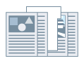

Настройки бумаги для таблиц
Можно печатать в области для таблиц бумаги для таблиц.

1.
Укажите бумагу для таблиц в качестве типа бумаги во вкладке [Источник бумаги].
Более подробно см. в разделе
Указание типов бумаги.
2.
Нажмите [Сведения о бумаге для таблиц].
3.
Настройте стиль печати → нажмите [ОК].
Для смещения данных печати в область для таблиц: выберите [Сдвинуть позицию печати] → укажите расстояние смещения данных в [Ширина сдвига] → нажмите [ОК].
|
Данные для печати создаются для формата бумаги, который не включает в себя область для таблиц.
|
Печать без сдвига данных для печати: выберите [Не сдвигать позицию печати] → укажите [Формат бумаги для таблиц] → нажмите [ОК].
|
Данные для печати создаются для специального формата бумаги, включающего в себя область для таблиц (бумага для таблиц A4 = 223 x 297 мм (8,77 x 11,69 дюйма), бумага для таблиц Letter = 228,6 x 279,4 мм (9,00 x 11,00 дюймов)).
|
Вставка бумаги для таблиц
1.
Откройте вкладку [Источник бумаги].
2.
Выберите настройку из списка [Выбор по].
3.
Выберите [Вставка листов] из [Выбор бумаги].
4.
Выберите бумагу для страниц содержания в [Исходный источник бумаги] или [Исходный Типу бумаги].
5.
Нажмите [Настройки вставки листа].
Откроется диалоговое окно [Настройки вставки листа].
6.
Выберите [Бумага для таблиц] из [Листы для вставки] → нажмите [Источник бумаги], [Печать на] и [Вставка].
7.
Нажмите [Настройки] → укажите бумагу для таблиц в качестве типа бумаги → нажмите [ОК].
8.
Если нужно печатать на таблице, нажмите [Сведения о бумаге для таблиц] → установите положение печати → нажмите [ОК].
9.
Нажмите [Добавить].
Настройки вставки бумаги для таблиц добавлены в [Список настроек].
10.
Нажмите [ОК].
Необходимые условия
Выберите бумагу из [Типу бумаги] в диалоговом окне [Формат для назначения лотка] вкладки [Настройки устройства].
Функции, недоступные в сочетании с данной функцией
Вкладка [Основные настройки] или [Окончательная обработка] → [Окончательная обработка] → [Группирование] или [Поворот]
[Настройки устройства] → [Буферизация на хост-компьютере] → [Отключена]
Справки
Можно вставить до 100 листов бумаги для таблиц. Номера листов, которые можно указать для вставки листов бумаги для таблиц - от страницы 1 до страницы 9999. Печатать можно только на передней стороне листов для таблиц.
Печать на обеих сторонах листов бумаги для таблиц невозможна. Если используется бумага для таблиц, выберите [Односторонняя печать] во вкладке [Основные настройки] или [Окончательная обработка]. Более подробно о переключении между двухсторонней и односторонней печатью см. в разделе
Односторонняя и двухсторонняя печать.